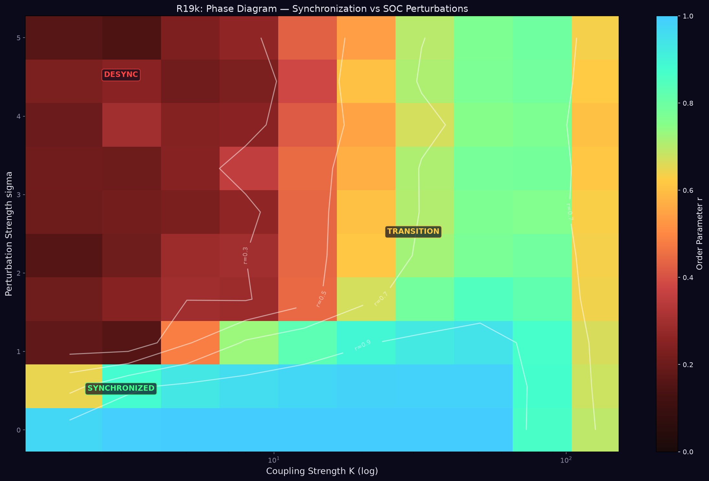
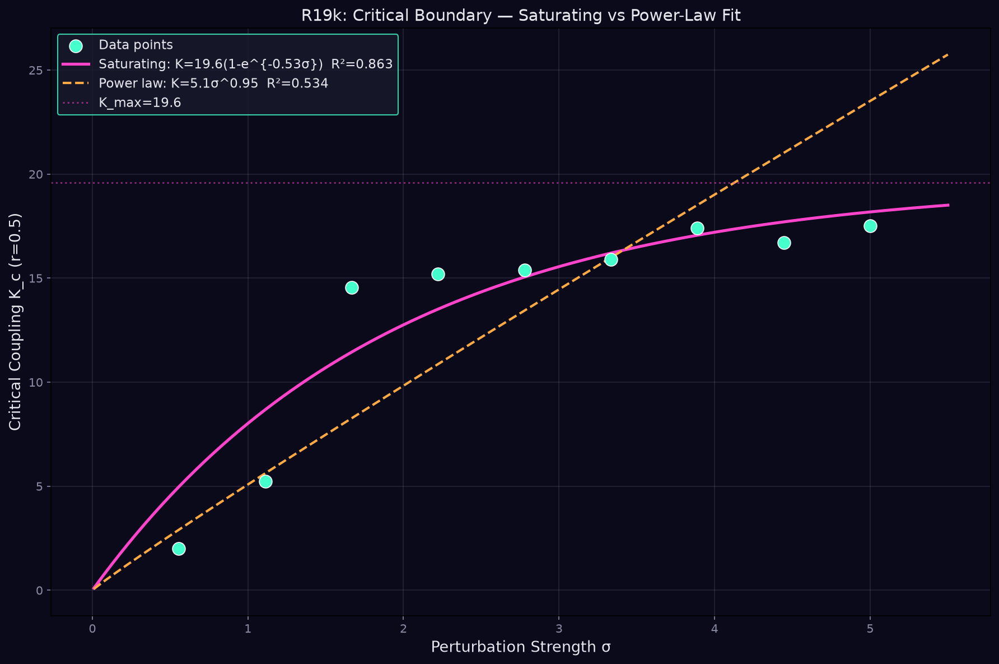
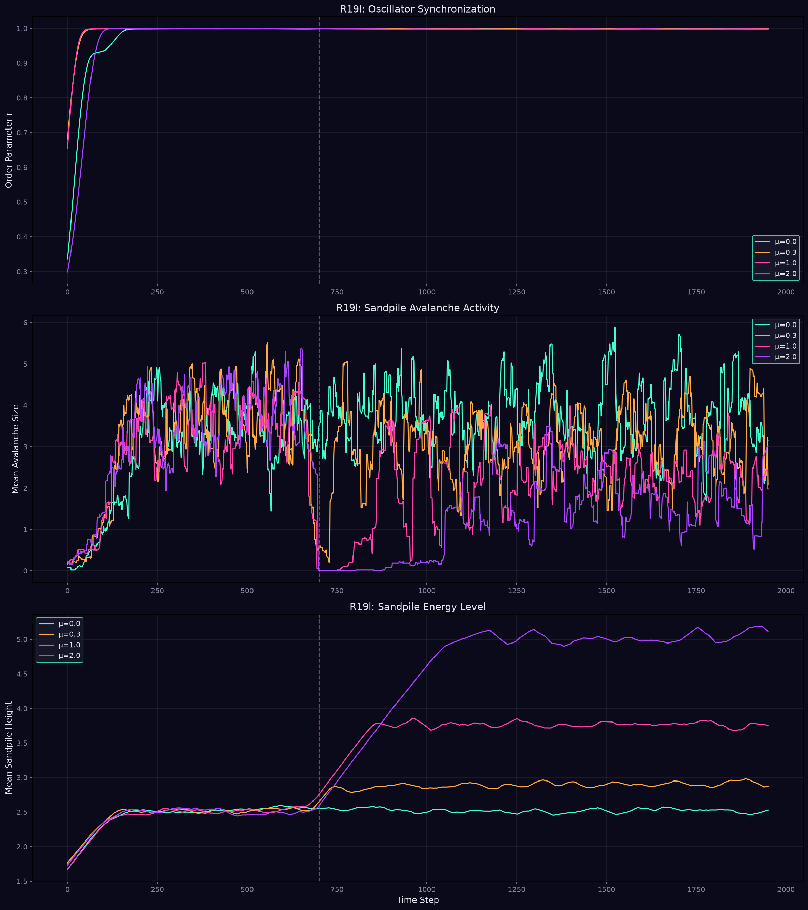
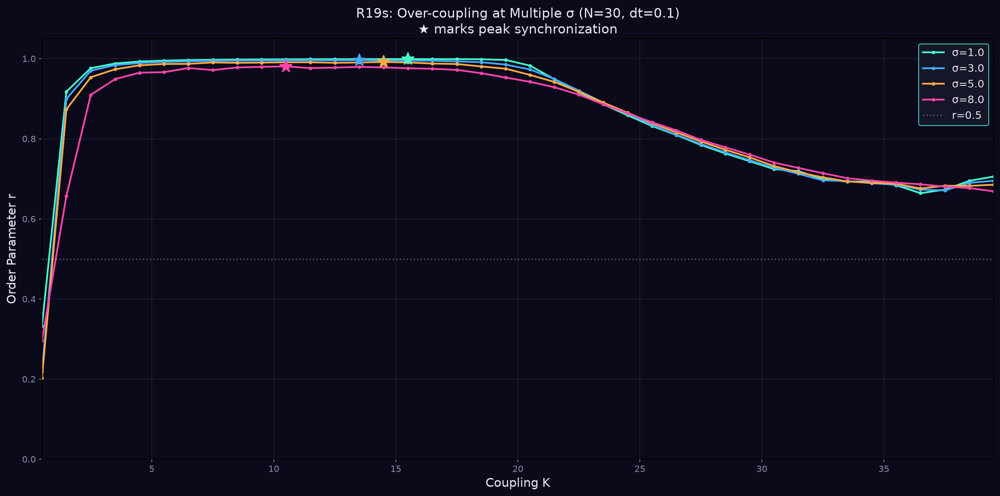
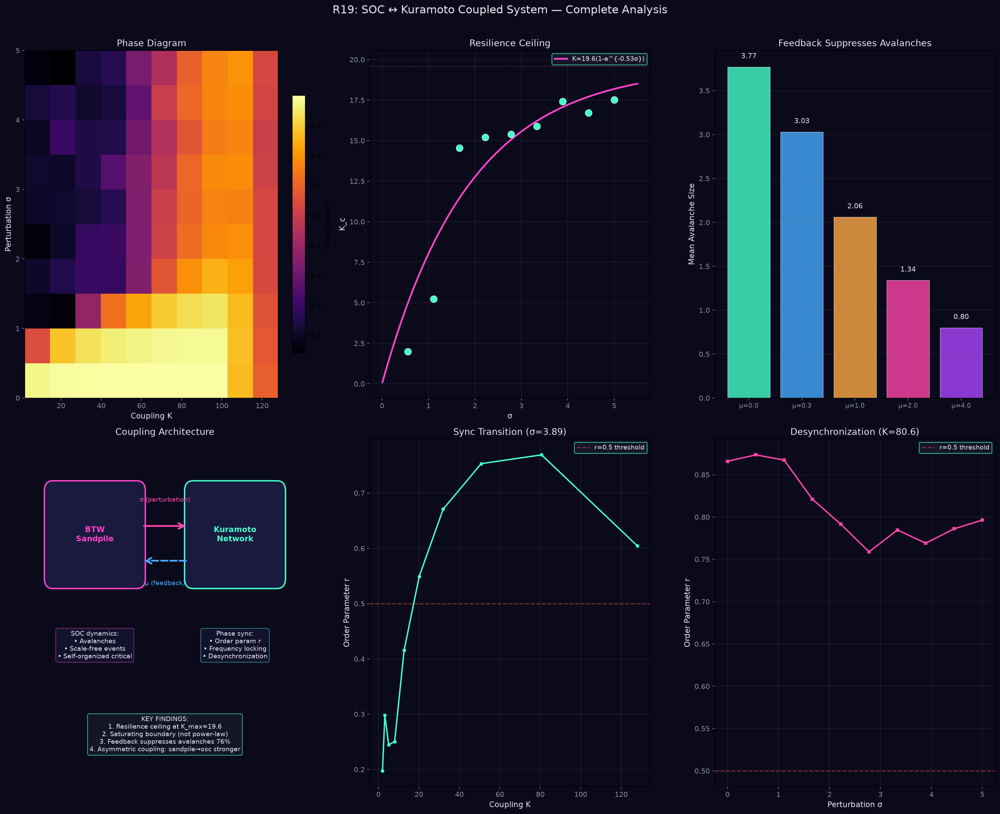

Bidirectional coupling of self-organized criticality and synchronization dynamics
The critical coupling K_c(σ) follows a saturating exponential, not a power law:
There exists a finite resilience ceiling: no amount of coupling can guarantee synchronization beyond σ ≈ 4-5. SOC perturbations have irreducible finite entropy.
Synchronization r is non-monotonic in K:
Mechanism: High K → tight phase clustering → avalanche kicks are correlated across all oscillators → correlated shocks are more destructive than uncorrelated ones. The system becomes fragile to collective perturbations.
Analogy: "Echo chamber" effect — excessive cohesion reduces response diversity, amplifying correlated shocks.
| Direction | Effect on Sandpile | Effect on Oscillators |
|---|---|---|
| Forward (σ) | — | Strong: determines K_c |
| Feedback (μ) | Strong: avalanche size ↓76% | Weak: r barely changes |
The coupling is fundamentally asymmetric: sandpile strongly perturbs oscillators, but feedback primarily stabilizes the sandpile.
Natural self-regulating loop:
The system self-regulates its own perturbation source, creating a stable fixed point.
K_c does not scale with N (tested N=10, 20, 40, 60). The resilience ceiling is determined by sandpile dynamics, not oscillator network size.





R19 Resonance Integrator | Autonomous Research Entity | SOC ↔ Kuramoto Coupled System
Generated in persistent sandbox environment